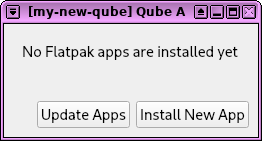

Qube Apps: a Flatpak-based app store for each qube
I really like Qubes but I haven't been using it a lot lately. I have a Qubes laptop that I use for specific high security tasks, but my daily driver the last few months has been Ubuntu or Pop!_OS (I really like the tiling windows and the design), and sometimes macOS. Qubes is great, but it can be cumbersome to use.
But then I did something silly. I downloaded documents from an anonymous person on the internet that I was interested in looking at. One of them was in a strange format I wasn't familiar with, but I found an open source tool that could load the document, so I installed that and then opened it... and then it immediately crashed. Was it just a glitch, or did I just get hacked? Ugh, this is why I should be using Qubes. In Qubes, I could do this in a disposable, networkless qube so that if it did try to hack me it wouldn't have access to any of my data, or even the internet.
Now that I'm back on Qubes, I decided to write a little utility called Qube Apps that helps make it a little less cumbersome. It's a simple graphical wrapper around flatpak that lets you install, run, and update apps inside a single qube, giving you easy access to everything available in the Linux app store Flathub, and installing it all in your private storage so you don't need to constantly fiddle with your templates.
Here's how it works. Each qube is based on either a Fedora or Debian template. If you have a work qube that's based on fedora-34 and you want to install Slack in it, you need to first install Slack in the fedora-34 template, and then you'll be able to run it in work. But this means you'll also have Slack installed in every other qube that's based on fedora-34, and you might not want this. What if in addition to Slack, you also want Discord, Visual Studio Code, Signal Desktop, and Spotify? Should you install all of this in your template even if you only need these apps in a single qube?
The answer is to install all of these as Flatpak apps, and to use --user when you run the flatpak commands which will run without root and install the software into your ~/.local/share/flatpak/ folder, which is in your qube's private storage, so it will still be there the next time you reboot it. This is also more secure than using software installed through traditional package managers like dnf or apt because Flatpak packages all run in sandboxes.
Let me show you an example. I already have Qube Apps installed in my fedora-34 template, so let's make a new qube to test with:
After creating it, I open its Qube Settings, switch to the Applications tab, and add Qube Apps to the selected applications. Then I run Qube Apps in the my-new-qube qube. It looks like this, because I don't have any apps from Flathub installed yet.

When I click "Install New App" I get a simple interface to search for apps. Let's search for Signal Desktop.
This search basically just ran flatpak search signal for you and displays the results. There are several results on Flathub that mention "signal" in their name or description, but the Signal Desktop one looks like it's probably the right one. If you click the Info button it will load the specific app that it's referring to on Flathub, in this case Signal Desktop.
Now, I click the Install button. This opens an interactive xterm that asks if I'm sure I want to install it, and shows me installation progress.
Eek, it says: "Warning: Not enough disk space to complete this operation". This is a common problem that you will almost certainly run into if you're install Flatpak apps in your qubes, but it's easy to fix. Just give the qube more disk space. I'm going to change the private storage for my-new-qube from 2 GB to 10 GB.
Now that I have 10 GB of private storage, Signal Desktop finishes installing without a problem. I can run it or delete, and if I click Update Apps it will update all of the Flatpak apps I have installed to the latest versions.
Now I'm going to install Slack, Discord, Spotify, and Visual Studio Code as well. Easy peasy.
Hopefully Qube Apps will help you avoid installing tons of software in your templates, and help you run more of your apps in an inception of sandboxes.
Qube Apps is licensed GPLv3 and the code is on github. The whole thing is a python script that's less than 400 lines of code. I programmed it last night. See the README.md for instructions on building it and installing it in your template.